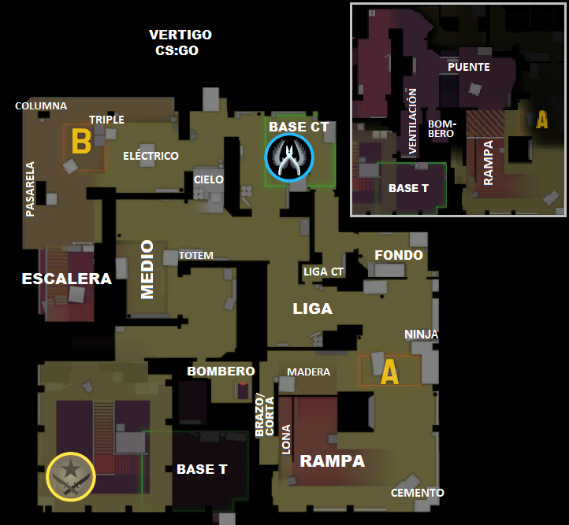
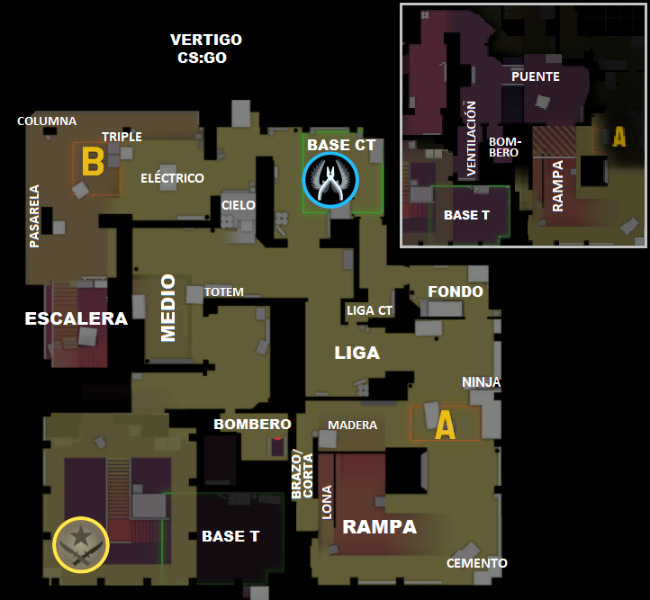
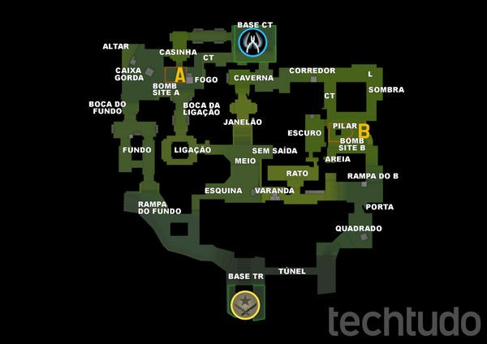
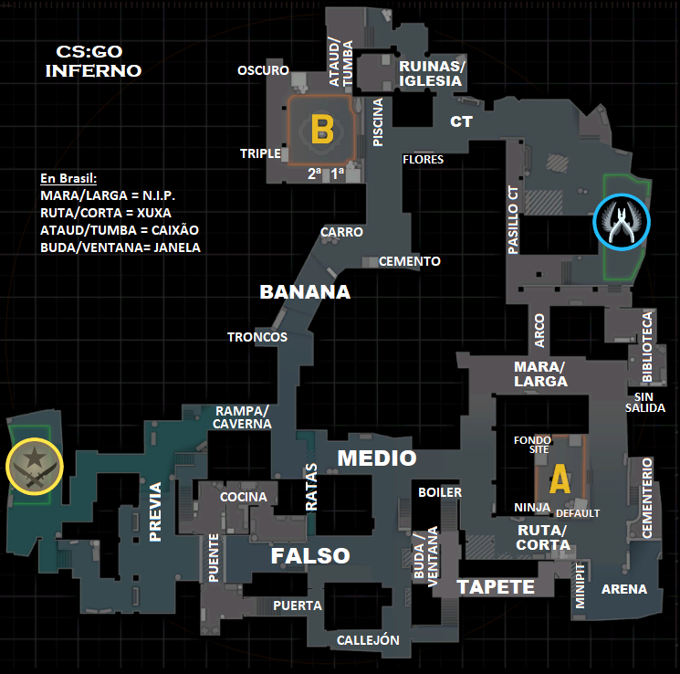
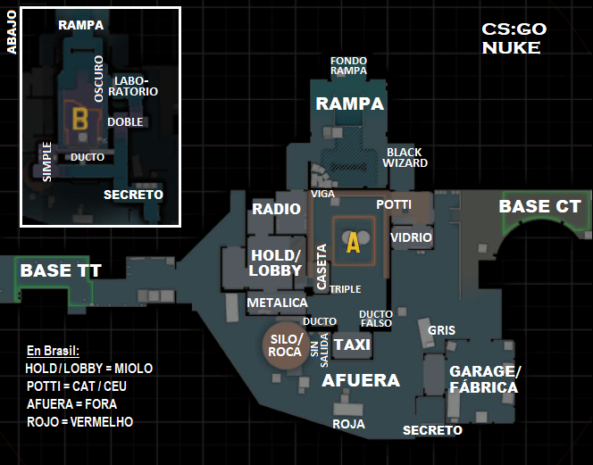
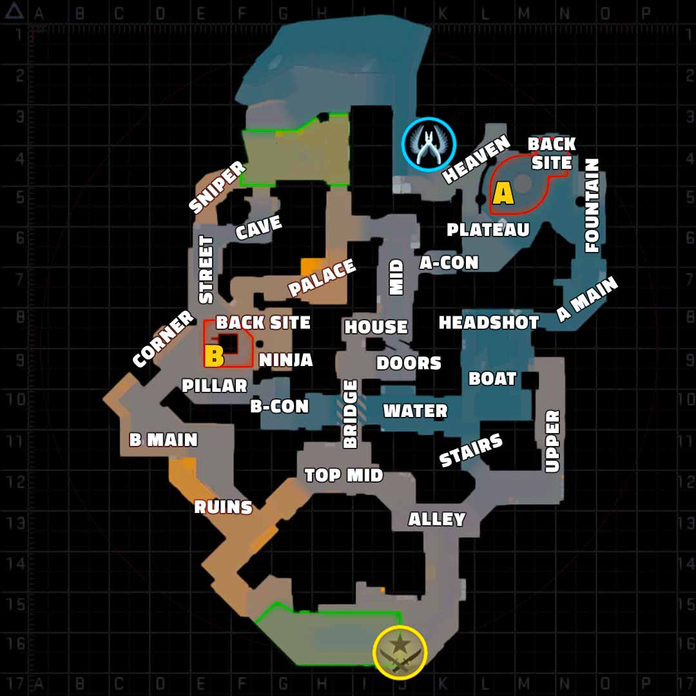
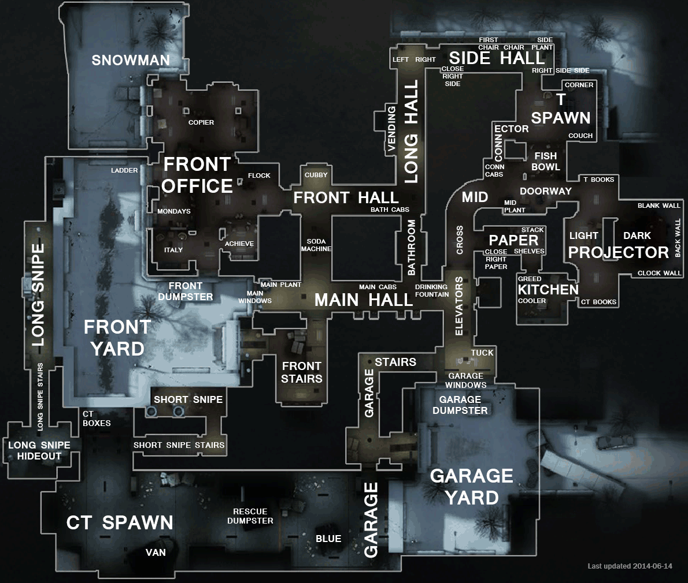
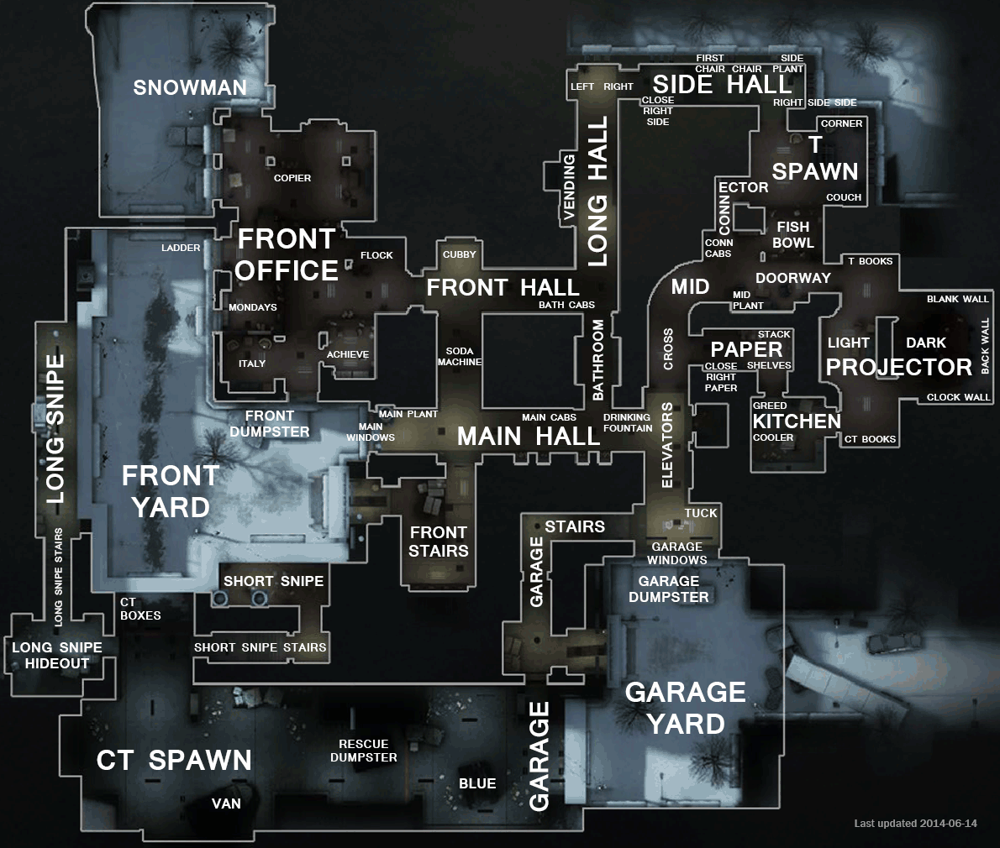

Mapas del CSGO:
¿Como funciona un mapa de CSGO?
SITE A: Uno de los dos lugares donde los terroristas tienen que plantar la bomba y los antiterroristas lo deben impedir.
SITE B: Uno de los dos lugares donde los terroristas tienen que plantar la bomba y los antiterroristas lo deben impedir.
MID: Mejor conocido como medio, se considera el medio del mapa donde se divide el site A y site B, tambien una de las rutas que pueden tomar los terroristas para ir a plantar la bomba. Donde tambien pueden estar defendiendo los antiterroristas.
RESPAWN (T): Base donde siempre empiezan los terroristas.
RESPAWN (CT): Base donde empiezanlos antiterrorista, estan mas cerca de site A, site B y Mid para poder posicionarse para defenderlo.
Funcionamiento
Como puedes observar arriba en la imagen,un mapa en el juego Counter-Strike: Global Offensive (CS:GO) es un entorno virtual donde los jugadores participan en enfrentamientos entre dos equipos: terroristas y antiterroristas. A continuación, te proporciono una descripción básica de cómo funcionaría un mapa en CS:GO para alguien que no está familiarizado con el juego:
Equipos:
Terroristas (T): Este equipo tiene objetivos específicos, como plantar una bomba en un lugar designado o eliminar al equipo antiterrorista. Antiterroristas (CT): Este equipo debe prevenir que los terroristas completen sus objetivos, ya sea desactivando una bomba plantada o eliminando a todos los terroristas.
Objetivos:
El objetivo principal para los terroristas puede ser plantar la bomba en uno de los sitios designados (A o B) y protegerla hasta que explote. El objetivo principal para los antiterroristas puede ser evitar que los terroristas planten la bomba, desactivarla si es plantada, o eliminar a todos los terroristas.
Mapa y Ubicaciones:
Los mapas en CS:GO están diseñados con varias ubicaciones clave, como sitios de bombas, puntos de encuentro, pasillos, y áreas estratégicas. Los jugadores deben aprender las ubicaciones importantes, ya que el conocimiento del mapa es crucial para el éxito en el juego.
Rondas y Estrategias:
Cada juego se divide en rondas, y los jugadores cambian de roles (terroristas a antiterroristas o viceversa) después de cierto número de rondas. Los jugadores planifican estrategias, coordinan ataques y defensas, y utilizan el conocimiento del mapa para ganar ventajas tácticas.
Armas y Equipamiento:
Los jugadores pueden comprar armas y equipo al comienzo de cada ronda utilizando el dinero virtual del juego. La elección de armas y equipo es estratégica y puede afectar el resultado de la ronda.
Comunicación:
La comunicación entre los miembros del equipo es esencial. Los jugadores suelen utilizar micrófonos para coordinar tácticas, informar sobre la ubicación del enemigo y planificar estrategias.
Ejemplo de los demas mapas del juego
 

 
 
 
